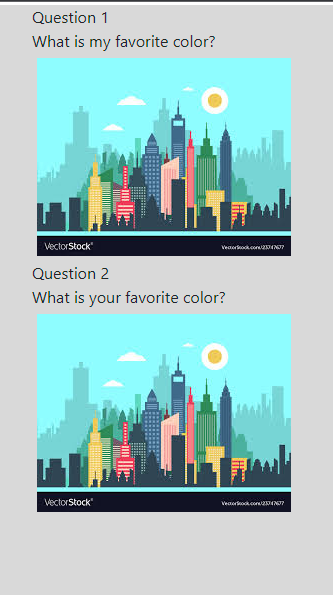

Message protocol¶
Focus on making it work in webchat
Webchat¶
In general¶
responses: utter_greet:
text: “Hey, {name}. How are you?”
{name}can be set programatically or can be taken from a slot.
dispatcher.utter_message( template=”utter_greet”, name=”Sara†)
Conditionals¶
To specify repsonses to only be sent to the furhat, and not webchat you can apply a conoditional:
channel: furhat
- text: Link to [Uis Homepage](https://uis.no)
- text: Visit UIS no
channel: furhat
If no channel: furhat is present, responses will still be sent to furhat to be uttered. So normally you don’t use this.
Only use this if you need to distinguish between webchat and furhat \ spoken.
Links¶
text: Link to [Uis Homepage](https://uis.no)
Issue: Since this is text, furhat will try to speak out the link.
To solve this you can use conditional statements:
- text: Link to [Uis Homepage](https://uis.no)
- text: Visit UIS no
channel: furhat
This means the Visit UIS no will be spoken by the furhat, and appear at the furhatscreen, while the link will appear in the webchat.
Emojis¶
Most Emojis work everywhere that can display text. Check out this website to copy-paste some emojis.
https://emojipedia.org/
Images¶
utter_cheer_up:
- text: "Here is something to cheer you up:"
image: "https://i.imgur.com/nGF1K8f.jpg"
Carousel¶
A carousel is a custom action that needs to be modified to your specific needs. There is a action_quiz carousel basic template.
So you will need to copy the template, register it as a new action, and fill in the response as you need. This example returns the name action_quiz.
Rename your new file, your class, and return name. The name returned, is the name you register in domain.yml
class ActionQuiz(Action):
def name(self) -> Text:
return "action_quiz"
You should now be able to call this action, to serve a list. That works both for webchat and the furhatscreen.
The carousel will behave differently on furhatscreen and the webchat. No interactivity on the furhatscreen, so no buttons.
Furhatscreen¶

Webchat¶
Furhat Screen¶
Maps¶
If maps are needed it should simply be an image. Any markers would be put on the map before saving the image.
Furhat¶
Emojis¶
If you use emojis in responses, the furhat should only allow alphanumerical values, e.g scrub any emojis from the text, and not try to pronounce emoji-names.
Facial expressions¶
Make the furhat show emotions. Currently the furhat will raise eyebrows and smile as a default response.
Adding a custom data to the response with the following syntax will make the furhat show facial expressions.
utter_goodbye:
- text: "Bye"
custom:
data:
expression:
expression_type: "anger"
These 5 facial expressions are currently supported.
“anger†to Gestures.ExpressAnger,
“shakehead†to Gestures.Shake,
“nod†to Gestures.Nod,
“wink†to Gestures.Wink,
“surprise†to Gestures.Surprise